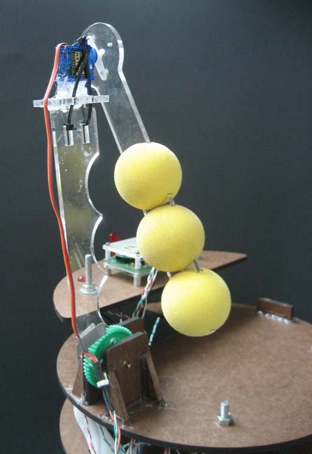
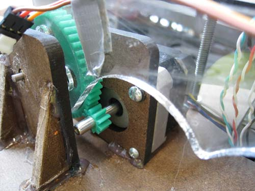

|
||
|
|
||
|
OVERVIEW
| HARDWARE
| SOFTWARE
| GALLERY
| THE TEAM
|
||
|
Overview
Arm Positioning Drive Train |
ARM METHOD 
We chose to knock off the hats with an arm versus a shooting mechanism because the reliability of the arm outweighed the benefits of speed from shooting. From each of the 8 x-positions, we designed the arm to extend out and reach the corresponding two targets. In order to fit the arm in the 12"x12"x11.5" box, we designed a multi-joint arm. Our final design implemented a 2-segment arm using 2 motors. Fully-extended, the arm could reach a 16" distance and could easily knock off the hats that were 13" away from any x-position. Two motors were required to swing the arm. A stepper motor raised the should to various heights and a servo motor swiped the end segment sideways. The sideways swipe allowed us to knock down hats even if our wheels did not perfectly align the bot with the target.  The final consideration for our arm was the torque required by the stepper motor to raise the arm. Given our available gears, we found that a 5 to 1 gear ratio gave us a good balance between the speed and torque needed to extend and retract the arm. This made our arm much slower to extend than we had expected. A classmate suggested that after the start of the match, we could extend outside the starting box and keep our arm raised halfway to minimize the arm extension time. We implemented his suggestion, and it significantly improved the time of the arm motion. |
|